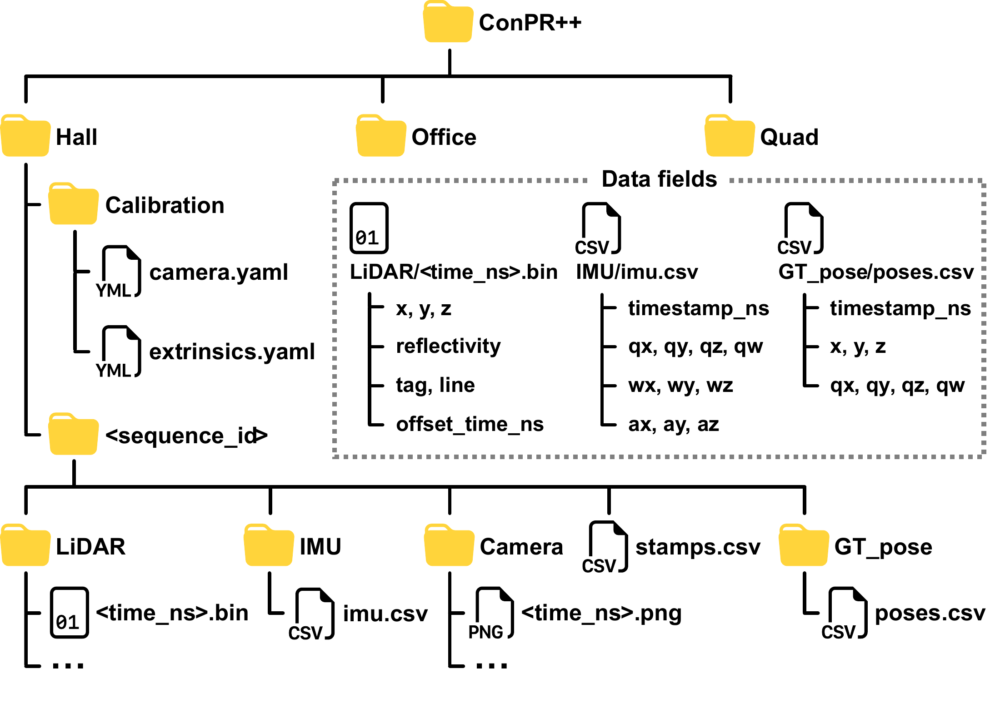

Dataset and code
Download
22 recording sessions across three construction sites. Explore sequences.
Dataset access
To request a download link, submit your email address, name, and affiliation using the form below.
Data format
Each site contains shared calibration files and date-based recording sessions.

Session folders use YYMMDD dates. LiDAR and image filenames contain the acquisition timestamp in nanoseconds.
- LiDAR BIN
- Individual scans containing XYZ coordinates, reflectivity, tag, line, and point-time offsets.
- Camera PNG
- RGB images at 1280 × 720 for Hall and Quad, and 640 × 480 for Office.
- IMU CSV
- Timestamped orientation, angular velocity, and acceleration measurements.
- Ground truth CSV
- Timestamped IMU positions and orientations in a common coordinate frame for each site.
- Calibration YAML
- Camera intrinsics and sensor extrinsics, shared by all sessions at each site.
- Event index CSV
stamps.csvlists sensor observations in timestamp order.
Code
The code is being prepared for release.
GitHub repository